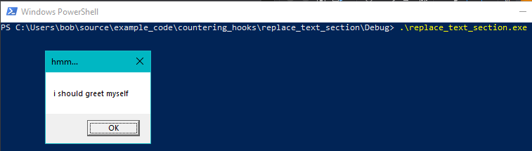
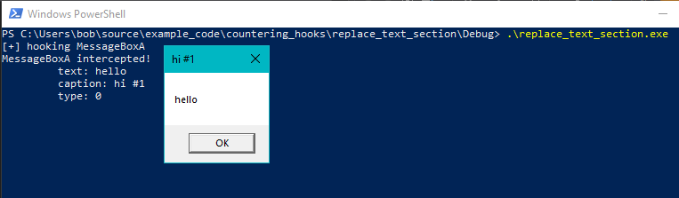
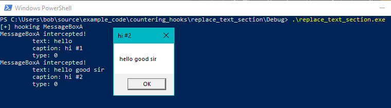
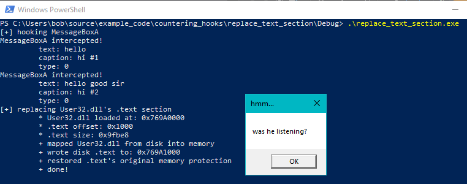

# Unhooking - Detect Hook & Restore DLL's .text
If you can't be bothered to restore the original bytes of each hooked function, you could simply overwrite the entire .text section of the loaded DLL in your process (that has been modified with hooks) with the original DLL on disk.
Examples (credit goes here):
•
https://www.ired.team/offensive-security/defense-evasion/how-to-unhook-a-dll-using-c++•
https://github.com/NtRaiseHardError/AntiHook/blob/d214354cf98398553cc981aca7b95784f79af03a/AntiHook/AntiHook/AntiHook.c#L531## Demo
I'm hooking
MessageBoxA from
User32.dllHere are my function calls:
• unhooked MessageBoxA
• hooked MessageBoxA
• hooked MessageBoxA
• unhookedMessageBoxA
int main(void)
{
MessageBoxA(NULL, "i should greet myself", "hmm...", MB_OK);
HookFunction("User32.dll", "MessageBoxA", &hooked_MessageBoxA, (LPVOID)&orig_MessageBoxA);
MessageBoxA(NULL, "hello", "hi #1", MB_OK);
MessageBoxA(NULL, "hello good sir", "hi #2", MB_OK);
ReplaceTextSection("User32.dll");
MessageBoxA(NULL, "was he listening?", "hmm...", MB_OK);
return 0;
}
Here's the first unhooked MessageBoxA
Then we hook MessageBoxA and our function gets intercepted (the parameters get logged)
The 2nd MessageBoxA gets intercepted too
Then we replace User32.dll's .text section.
We call MessageBoxA again and see that the function is no longer hooked.
## Code
Compiled as x86 Debug on Windows 10 x64 2004 in Visual Studio 2019.
The
ReplaceTextSection() works for both x86 and x64, but the
HookFunction function which was included for testing only works for x86 (in case you're wanting to test the code).
ReplaceTextSection() HAS NO BASE RELOCATIONS.
This might cause problems when replacing some DLLs.
#include <stdio.h>
#include <Windows.h>
#include <psapi.h>
#include "hde/hde32.h"
int(__stdcall* orig_MessageBoxA)(HWND hWnd, LPCSTR lpText, LPCSTR lpCaption, UINT uType);
int __stdcall hooked_MessageBoxA(HWND hWnd, LPCSTR lpText, LPCSTR lpCaption, UINT uType)
{
printf("MessageBoxA intercepted! \n");
printf("\t text: %s \n\t caption: %s \n\t type: %d \n", lpText, lpCaption, uType);
return orig_MessageBoxA(hWnd, lpText, lpCaption, uType);
}
/*
x86 only :/
*/
BOOL HookFunction(char* dll_name, char* function_name, void* hooked_function, void** p_orig_function)
{
BOOL okay = TRUE;
BOOL b_ret = FALSE;
HMODULE hmod_dll = NULL;
LPVOID original_function = NULL;
DWORD instruction_space = 0;
LPVOID p_instruction = NULL;
hde32s instruction_disasm = { 0 };
LPVOID trampoline_addr = NULL;
DWORD jmp_originalfunction = 0;
DWORD jmp_trampoline = 0;
DWORD jmp_hook = 0;
DWORD old_protect = 0;
printf("[+] hooking %s \n", function_name);
hmod_dll = LoadLibraryA(dll_name);
original_function = GetProcAddress(hmod_dll, function_name);
if (original_function == NULL)
{
printf("\t failed to grab address of %s: %d \n", function_name, GetLastError());
okay = FALSE;
return okay;
}
/*
Allocate trampoline space
Will contain:
- (5 bytes) jmp hook_function
- (5 bytes) 5 bytes from original function
- (5 bytes) jmp original_function + 1
*/
trampoline_addr = VirtualAlloc(NULL, 15, MEM_COMMIT | MEM_RESERVE, PAGE_EXECUTE_READWRITE);
if (trampoline_addr == NULL)
{
printf("\t failed to allocate gatecode space: %d \n", GetLastError());
okay = FALSE;
return okay;
}
// Calculate jumps
jmp_trampoline = ((DWORD)trampoline_addr + 5) - (DWORD)original_function; // relative jump from original function + 0 to trampoline + 10
jmp_originalfunction = ((DWORD)original_function) - ((DWORD)trampoline_addr + 5); // relative jump from trampoline + 5 to original function
jmp_hook = (DWORD)hooked_function - ((DWORD)trampoline_addr + 10) - 5; // relative jump from trampoline + 10 to hooked code
// Construct trampoline
memcpy_s((BYTE*)trampoline_addr, 5, original_function, 5); // Copy first 5 bytes from original function to trampoline space
memcpy_s((BYTE*)trampoline_addr + 5, 1, "\xE9", 1); // Jump to original function + 5 (bypasses the hook)
memcpy_s((BYTE*)trampoline_addr + 6, 4, &jmp_originalfunction, 4);
memcpy_s((BYTE*)trampoline_addr + 10, 1, "\xE9", 1); // Jump to hook code
memcpy_s((BYTE*)trampoline_addr + 11, 4, &jmp_hook, 4);
// Disassemble instructions at original function until we have 5 bytes to work with (to build a jmp)
while (instruction_space < 5)
{
p_instruction = (LPVOID)((DWORD)original_function + (DWORD)instruction_space);
instruction_space += hde32_disasm(p_instruction, &instruction_disasm);
}
// Make original function writable
b_ret = VirtualProtect(original_function, 5, PAGE_EXECUTE_READWRITE, &old_protect);
if (b_ret == FALSE)
{
printf("\t failed to make memory writable: %d \n", GetLastError());
okay = FALSE;
return okay;
}
// Overwrite first 5 bytes of original function with jump to trampoline
memcpy_s(original_function, 1, "\xE9", 1);
memcpy_s((BYTE*)original_function + 1, 4, &jmp_trampoline, 4);
b_ret = VirtualProtect(original_function, 5, old_protect, &old_protect);
if (b_ret == FALSE)
{
printf("\t failed to restore original memory protection: %d \n", GetLastError());
okay = FALSE;
return okay;
}
// Set pointer to original function to start of trampoline (trampoline will run function prologue and then jump to original function)
*p_orig_function = trampoline_addr;
FlushInstructionCache(GetCurrentProcess(), original_function, 7); // Not sure if necessarily needed
return okay;
}
/*
Replaces the specified DLL's .text section in memory with its .text section on disk.
Supports both x86 and x64.
*/
BOOL ReplaceTextSection(char* dll_name)
{
BOOL ok = TRUE;
BOOL b_ret = FALSE;
int i_ret = 0;
MODULEINFO mi = { 0 };
HMODULE h_memDLL = NULL;
LPVOID mem_dll_base = NULL;
LPVOID mem_text_addr = NULL;
char disk_dll_path[MAX_PATH] = { 0 };
HANDLE h_diskDLL = NULL;
HANDLE h_diskDLLMap = NULL;
LPVOID disk_dll_base = NULL;
LPVOID disk_text_addr = NULL;
PIMAGE_DOS_HEADER mem_DLL_DosHeader = NULL;
PIMAGE_NT_HEADERS mem_DLL_PeHeader = NULL;
PIMAGE_SECTION_HEADER mem_DLL_SectionHeader = NULL;
DWORD text_offset = 0;
DWORD text_size = 0;
DWORD old_protect = 0;
printf("[+] replacing %s's .text section \n", dll_name);
// Grab address of DLL in memory
h_memDLL = GetModuleHandleA(dll_name);
GetModuleInformation(GetCurrentProcess(), h_memDLL, &mi, sizeof(mi));
mem_dll_base = mi.lpBaseOfDll;
printf("\t * %s loaded at: 0x%p \n", dll_name, mem_dll_base);
// Loop through the DLL in memory, find its .text section, and grab its offset and size
mem_DLL_DosHeader = (PIMAGE_DOS_HEADER)mem_dll_base;
mem_DLL_PeHeader = (PIMAGE_NT_HEADERS)((SIZE_T)mem_dll_base + (SIZE_T)mem_DLL_DosHeader->e_lfanew);
mem_DLL_SectionHeader = IMAGE_FIRST_SECTION(mem_DLL_PeHeader);
for (int i = 0; i < mem_DLL_PeHeader->FileHeader.NumberOfSections; i++)
{
if (strcmp(mem_DLL_SectionHeader->Name, ".text") == 0)
{
text_offset = mem_DLL_SectionHeader->VirtualAddress;
text_size = mem_DLL_SectionHeader->Misc.VirtualSize;
break;
}
}
printf("\t * .text offset: 0x%x \n", text_offset);
printf("\t * .text size: 0x%x \n", text_size);
// Open disk DLL and map it into memory
sprintf_s(disk_dll_path, MAX_PATH, "C:\\Windows\\System32\\%s", dll_name);
h_diskDLL = CreateFileA(disk_dll_path, GENERIC_READ, FILE_SHARE_READ, NULL, OPEN_EXISTING, 0, NULL);
if (h_diskDLL == INVALID_HANDLE_VALUE)
{
printf("\t - failed to open DLL path: %d \n", GetLastError());
ok = FALSE;
goto cleanup;
}
h_diskDLLMap = CreateFileMappingA(h_diskDLL, NULL, PAGE_READONLY | SEC_IMAGE, 0, 0, NULL);
if (h_diskDLLMap == NULL)
{
printf("\t - failed to create file mapping of disk DLL: %d \n", GetLastError());
ok = FALSE;
goto cleanup;
}
disk_dll_base = MapViewOfFile(h_diskDLLMap, FILE_MAP_READ, 0, 0, 0);
if (disk_dll_base == NULL)
{
printf("\t - failed to map disk DLL: %d \n", GetLastError());
ok = FALSE;
goto cleanup;
}
printf("\t + mapped %s from disk into memory \n", dll_name);
// Make .text section writable and overwrite the memory .text section (which has hooked functions) with the disk .text section
disk_text_addr = (LPVOID)((SIZE_T)disk_dll_base + text_offset);
mem_text_addr = (LPVOID)((SIZE_T)mem_dll_base + text_offset);
b_ret = VirtualProtect(mem_text_addr, text_size, PAGE_EXECUTE_READWRITE, &old_protect);
if (b_ret == FALSE)
{
printf("\t - failed to make .text section writable: %d \n", GetLastError());
ok = FALSE;
goto cleanup;
}
i_ret = memcpy_s(mem_text_addr, text_size, disk_text_addr, text_size);
if (i_ret != 0)
{
printf("\t - failed to overwrite .text section: %d \n", i_ret);
ok = FALSE;
}
printf("\t + wrote disk .text to: 0x%p \n", mem_text_addr);
b_ret = VirtualProtect(mem_text_addr, text_size, old_protect, &old_protect);
if (b_ret == TRUE)
printf("\t + restored .text's original memory protection \n");
printf("\t + done! \n");
cleanup:
if (disk_dll_base) UnmapViewOfFile(disk_dll_base);
if (h_diskDLLMap) CloseHandle(h_diskDLLMap);
if (h_diskDLL) CloseHandle(h_diskDLL);
return ok;
}
int main(void)
{
MessageBoxA(NULL, "i should greet myself", "hmm...", MB_OK);
HookFunction("User32.dll", "MessageBoxA", &hooked_MessageBoxA, (LPVOID)&orig_MessageBoxA);
MessageBoxA(NULL, "hello", "hi #1", MB_OK);
MessageBoxA(NULL, "hello good sir", "hi #2", MB_OK);
ReplaceTextSection("User32.dll");
MessageBoxA(NULL, "was he listening?", "hmm...", MB_OK);
return 0;
}